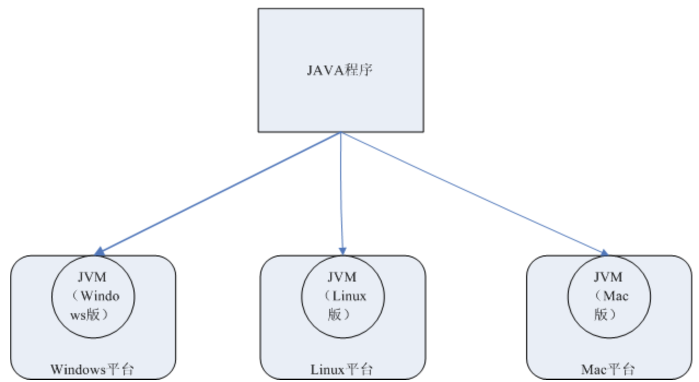

Jmeter简介
学习目标
- 了解Jmeter的优缺点
1. Jmeter 概述
JMeter最初是由Apache软件基金会的Stefano Mazzocchi编写和开发的, 所以Jmeter也称为“Apache JMeter”，它是一个开源的，100%基于Java的应用程序，带有图形界面。
Apache JMeter 是 100%纯 java 桌面应用程序，被设计用来测试客户端/服务器结 构的软件(例如 web 应用程序)。它可以用来测试包括基于静态和动态资源程序 的性能，例如静态文件，Java Servlets，Java 对象，数据库，FTP 服务器等等。 JMeter 可以用来在一个服务器、网络或者对象上模拟重负载来测试它的强度或 者分析在不同的负载类型下的全面性能。
另外，JMeter 能够通过让你们用断言创建测试脚本来验证我们的应用程序是否 返回了我们期望的结果，从而帮助我们回归测试我们的程序。为了最大的灵活性， JMeter 允许我们使用正则表达式创建断言。
Jmeter的主要功能有:
1. web自动化测试
2. 接口测试
3. 性能测试
4. 压力测试
5. 通过jdbc进行数据库测试
6. java测试
2. Jmeter的优缺点
优点:
1、开源工具，可扩展性非常好
2、高可扩展性，用户可自定义调试相关模块代码
3、精心简单的GUI设计，小巧灵活
4、完全的可移植性和100％纯java
5、完全swing和轻量组件支持（预编译的HAR使用javax.swing.*）包
6、完全多线程框架，允许通过多个线程并发取样以及单独的线程对不同的功能同时取样
7、支持脚本取样器
缺点:
1、 不支持IP欺骗
2、 使用JMeter无法验证JS程序，也无法验证页面UI，所以要须要和Selenium配合来完成Web2.0应用的测试
2. 了解：JDK、JRE、JVM
2.1 JDK
JDK概念：java开发工具包，程序员使用。包含JRE和JVM。
2.2 JRE
JRE(java runtime environment)：JAVA程序运行环境，包含JVM和JVM运行时所需要的资源。是java编写的程序运行时需要的软件环境, 是提供给想运行java程序的用户使用的.
2.3 JVM
JVM(java virtualenv machine)：Java虚拟机
思考:
JDK 和JRE的区别?
2.4 JAVA跨平台原理【扩展】
java跨平台机制是: 一次编译,到处运行.

总结： 对于测试人员，我们要记住，如果使用JMeter，必须要安装JDK或者JRE。
jdk安装参考: